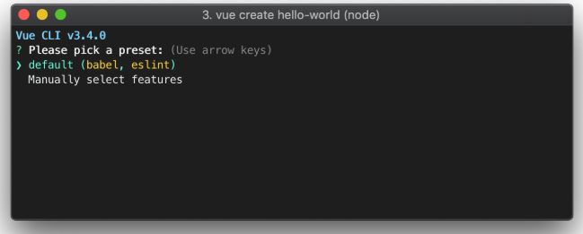
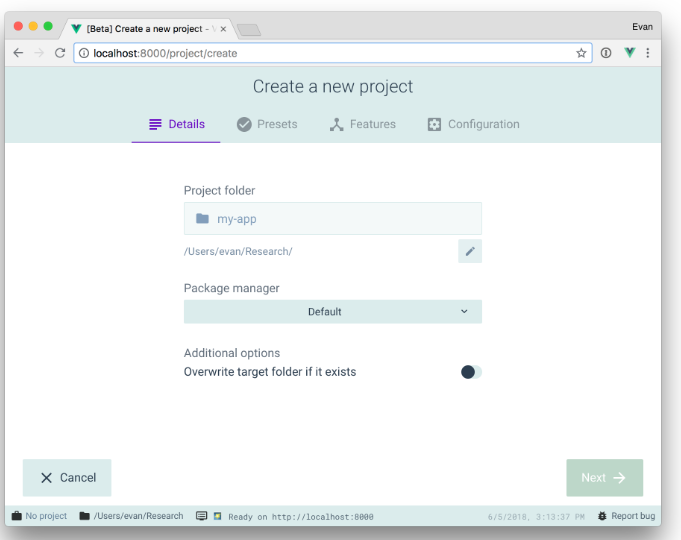

使用vue-cli脚手架搭建vue开发环境
vue-cli是什么？
vue-cli是vue官方提供的专门为单页面应用快速搭建繁杂的脚手架，它可以轻松的创建新的应用程序 而且自动生成vue和webpack的项目模板。最新版本是vue-cli3.0。 官方网址
vue-cli3.0全局安装
打开cmd命令行窗口，输入以下命令
npm install -g @vue/cli 或 yarn global add @vue/cli
如果已安装vue-cli2.0需要先卸载，再安装
npm uninstall -g vue-cli
如果想在vue-cli3.0上使用vue-cli2.0的构建命令vue init，可以全局安装一个桥架工具。
npm install -g @vue/cli-init
vue init的运行效果将会跟vue-cli@2.x相同vue init webpack my-project
vue-cli 创建一个项目
打开项目所在文件夹，输入以下命令
vue create my-project
此时你会被提示选取一个 preset。你可以选默认的包含了基本的 Babel + ESLint 设置的 preset，也可以选“手动选择特性”来选取需要的特性，如下图：

vue-cli 可视化创建项目
在命令行输入以下命令可在浏览器打开可视化页面
vue ui

vue-cli 创建的项目文件介绍
- public 存放html和静态资源
- src 源代码，是我们主要写代码的地方
- babel.config.js babel配置文件
- package.json
- vue.config.js vue项目配置文件（包括webpack）
vue-cli3进行跨域代理配置
// vue.config.js
module.exports = {
// 修改的配置
// 将baseUrl: '/api',改为baseUrl: '/',
baseUrl: '/',
devServer: {
proxy: {
'/api': {
target: 'http://www.example.org',
changeOrigin: true,
ws: true,
pathRewrite: {
'^/api': ''
}
}
}
}
}
vue-cli3 配置全局的less变量
- 在项目下打开命令行，输入以下命令
vue add style-resources-loader
- 此时会让css预处理器(less, sass等), 选择less即可
- 在vue.config.js进行配置引入已写好的全局less变量
pluginOptions: {
'style-resources-loader': {
preProcessor: 'less',
patterns: [
//这个是加上自己的路径，
//注意：试过不能使用别名路径
path.resolve(__dirname, './src/common/less/index.less'),
]
}
}